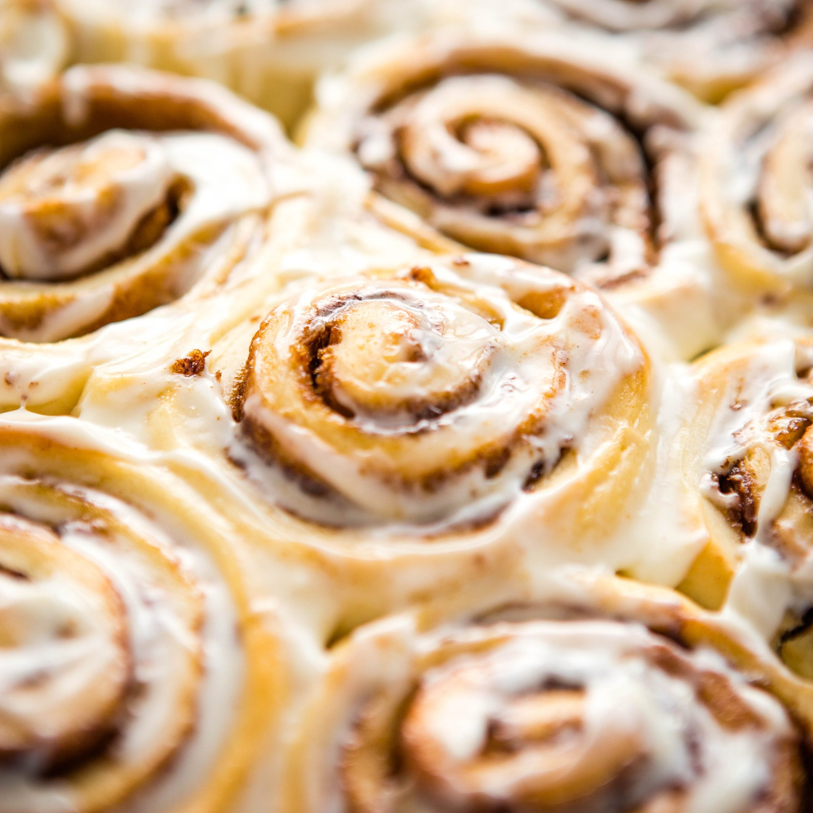

Cinnamon Buns

The stuff of what dreams are made of
Sweet, sticky and so moreish the recipe for these Cinnamon Buns may be worth doubling or even tripling! (yes, they are THAT good)...
Ingredients
For The Dough
- 200g full fat milk
- 2 medium eggs
- 600g strong bread flour
- 25g fresh yeast
- 10g salt
- 200g unsalted butter
For The Filling
- 150g unsalted butter
- 250g soft butter
- 2 tsp cinnamon
For The Egg Glaze
- 1 egg
- 2 tbsp full fat milk
For The Sugar Glaze
- 100g caster sugar
- 100g water
Steps
- Start by making the dough. Put the milk and eggs into the bowl of a food mixer then add the flour. Break in the yeast to one side of the bowl, then add the salt and sugar and butter to the other side.
- Mix on a slow speed for 4 minutes then increase the speed to medium and mix for a further 10-12 minutes until the dough comes away cleanly from the side of the bowl.
- Form the dough into a ball and pop into a clean floured bowl. Cover and leave for around 45 minutes or until double in size.
- Lightly flour a work surface and roll the dough into a rectangle roughly the size of an A3 sheet of paper.
- For the filling, beat the butter and sugar together until pale and stir in the cinnamon. Spread the filling over the top of the dough.
- With the long side facing you, fold in half lengthways to enclose the filling and slice it widthways into 24 strips each roughly 3.5cm across. Next, use a sharp knife to cut twice down the length of each strip to make three strands. Plait the three strands together and repeat to make 24 individual plaits.
- Take each plait and roll it up along its length to create a knot. Grease a 12 cup muffin tray and pop the knots into the tray. Cover and allow to prove for 1 hour.
- Aim to have your Gozney oven at around 200°C with little to no flame. Brush the knots with the egg glaze and pop into the outdoor oven to bake for between 15-20 minutes until golden.
- Meanwhile, make the sugar glaze. Put the sugar and water in a pan and bring to the boil, turn down to a simmer until you have a light syrup.
- Brush the baked knots with the syrup while still hot and leave to cool before devouring.